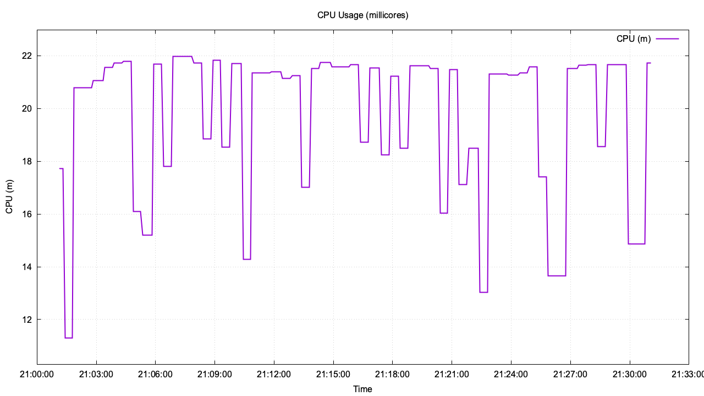

CPU Usage Report
System Info
Cluster Name:
cnfdg13-qtqnj
Cluster Version:
4.20.0
PTP Operator Version:
4.22
Node Running Pod:
cnfdg13.ptp.eng.rdu2.dc.redhat.com
Start Timestamp:
2026-02-17 21:01:07
Test Configuration
Command Used:
/Users/jacding/workspace/jzding/cloud-event-tools/ptp-cpu-test/ptp-cpu-test.sh -d 30 -i 5 -o /Users/jacding/logs/cpu-test.log -c --live
Pod:
linuxptp-daemon-mfzqn
Duration (seconds):
1800
Interval (seconds):
5
Log file:
/Users/jacding/logs/cpu-test.log
CPU unit:
millicores (m)
CPU Summary
Minimum CPU:
11.301m
Maximum CPU:
21.996m
Average CPU:
19.702m
Container Images (linuxptp-daemon pod)
Container
Image
cloud-event-proxy
quay.io/openshift/origin-cloud-event-proxy:4.22
kube-rbac-proxy
quay.io/openshift/origin-kube-rbac-proxy:4.22
linuxptp-daemon-container
quay.io/jacding/linuxptp-daemon:4.22
CPU Usage Chart
